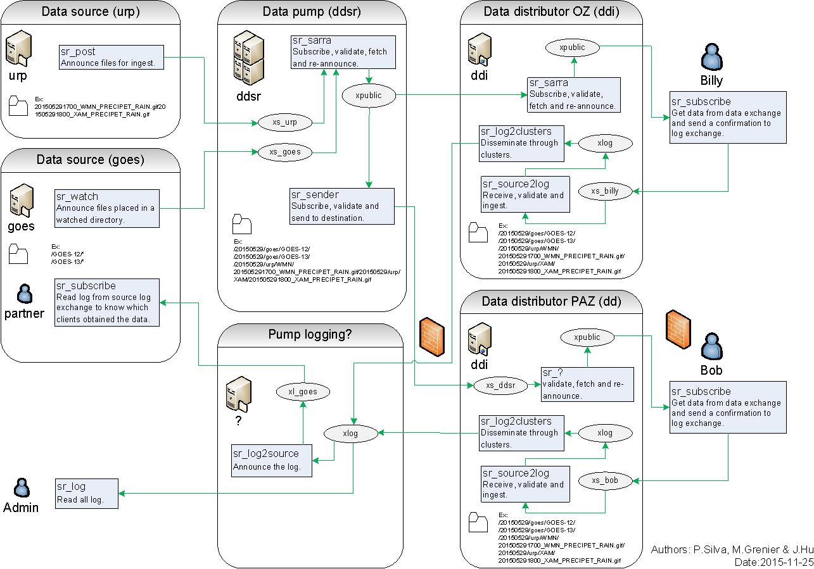

Status: Approved-Draft1-20150608
Basic Idea
MetPX-Sarracenia is a data duplication or distribution engine that leverages existing standard technologies (sftp and web servers and AMQP brokers) to achieve real-time message delivery and end to end transparency in file transfers. Whereas in Sundew, each pump is a standalone configuration which transforms data in complex ways, in sarracenia, the data sources establish a structure which is carried through any number of intervening pumps until they arrive at a client. The consumer can provide explicit acknowledgement that propagates back through the network to the source.
Whereas traditional file pumping is a point-to-point affair where knowledge is only between each segment, in Sarracenia, information flows from end to end in both directions. At it’s heart, sarracenia exposes a tree of web accessible folders (WAF), using any standard HTTP server (tested with apache). Weather applications are soft real-time, where data should be delivered as quickly as possible to the next hop, and minutes, perhaps seconds, count. The standard web push technologies, ATOM, RSS, etc… are actually polling technologies that when used in low latency applications consume a great deal of bandwidth an overhead. For exactly these reasons, those standards stipulate a minimum polling interval of five minutes. Advanced Message Queueing Protocol (AMQP) messaging brings true push to notifications, and makes real-time sending far more efficient.
Sources of data announce their products, pumping systems pull the data onto their WAF trees, and then announce their trees for downstream clients. When clients download data, they may write a log message back to the server. Servers are configured to forward those client log messages back through the intervening servers back to the source. The Source can see the entire path that the data took to get to each client. With traditional pumping applications, sources only see that they delivered to the first hop in a chain. Beyond that first hop, routing is opaque, and tracing the path of data required assistance from administrators of each intervening system. With Sarracenia’s log forwarding, the pumping network is completely transparent to the sources, in that they can see where it went. With end to end logs, diagnostics are vastly simplified for everyone.
For large files / high performance, files are segmented on ingest if they are sufficiently large to make this worthwhile. Each file can traverse the pump network independently, and reassembly is only needed at end points. A file of sufficient size will announce the availability of several segments for transfer, multiple threads or transfer nodes will pick up segments and transfer them. The more segments available, the higher the parallelism of the transfer. Sarracenia manages parallelism and network usage without explicit user intervention. As intervening pumps do not store and forward entire files, the maximum file size which can traverse the network is maximized.
These concepts below are not in order (yet?) maybe we will do that later. not sure about priorities, just number to be able to refer to them. They are meant to help guide (reflect?) design/implementation decisions:
For each objective/consideration/advice below, see if they make sense, and seem helpful. We should get rid of any that are not helpful.
The pump is, or any number of pumps are, transparent. Put another way: The source is in charge of the data they provide.
The source determines the distribution (scope, and permissions) The source can obtain any information about themselves:
- when status changed: start,stop,drop. - when notification messages are accepted. - when data is pulled by a consumer (a scope layer, or a end point.)
AMQP brokers do not transfer any user data, just metadata.
reasoning: need to keep the notification messages small so that the forwarding rate is high. large notification messages will gum up the works. also permissions become interesting. end up with a ‘maximum size’ threshold, and implementing two methods for everything.
Config changes should propagate, not be unique to a host you should not have to do dsh, or px-push. That sort of management is built in. the message bus is there for that. might use ‘scope’ to have commands propagate through multiple clusters.
Log is data.
It is not enough for justice to be done. Justice must be seen to be done.
It is not enough for data to be delivered. That delivery must be logged, and that log must be returned to the source. While we want to supply enough information to data sources, we do not want to drown the network in meta data. The local component logs will have much more information, The log messages traverse the network to the source are ´final dispositions´ whenever an operation is either completed or finally abandoned.
This is a data distribution tool, not a file tree replicator.
we do not need to know what linux uid/gid owned it originally.
we do not care when it was modified.
we do not care about it’s original permission bits.
we do not care what ACL’s it has (they aren’t relevant on the destination.)
we do not care about extended attributes. (portability, win,mac,lin,netapp?)
again doubtful about this one. Does it help?
Not worried about performance in phase 1 - performance is enabled by the scalability of the design:
-- segmentation/re-assembly provides multi-threading. -- segmentation means bigger files transfer with greater parallelism. adds multiple streams when that is worthwhile, uses a single stream when that makes sense. -- validation provides source bandwidth limiting.
need to prove all the moving parts work together first.
much later, may return to see how to make each transfer engine go faster.
This is not a web application, this is not an FTP server.
This application uses HTTP as one of the transport protocols, that’s all. It is not trying to be a web site, any more than it is trying to be an sftp server.
Common management not needed, just pass logs around.
Different groups can manage different pumps. when we interconnect pumps, they become a source for us. log messages are routed to the data sources, so they get our logs on their data. (security can have something to say about that.)
It needs to run anywhere. ubuntu,centos – primary. but windows also.
We are trying to make a pump that others can easily adopt. That means they can install and go.
- It needs to be easy to set up, both client and server.
(this aspect dealt with in packaging)
the application does not need to pursue absolute reliability.
Node failure is rare in a Data Centre environment. Working well in the normal case is the priority. if it breaks, information is never lost. Worst case, just re-post, and the system will resend the missing parts through the nodes that are left.
There might be some diagnostics to figure out which files are ‘in flight’ when a given node goes down (deadman timers). But not sure that multiple acks with guarantees in the face of node failure is needed. going faster and being simpler is likely more reliable in practice.
this is not a database, but a transfer engine.
Bulletins getting less common, Files are larger… No file too large.
old apps are used to tiny files (millions of them) in EC/MSC. but even in EC, files are getting bigger, and will likely grow a lot. Satellite sensor data is now very critical, and that is substantially larger. A traditional WMO format weather warning was limited to 15Kbytes (limited by internals systems to 32 Kbytes now) and those sizes were rarely reached. It was more like 7-12K. an average modern XML weather warning (CAP) is 60K so, so a five to eight fold increase. WMO since raised the limit to 500,000 bytes for WMO-GTS messages. and other mechanisms, such as FTP, have no fixed limit.
Other scientific domains use very large files (measured in terabytes.) aim to be able to flow those through the pumps. Worth thinking about transporting huge files.
Normal operation should not require programming knowledge.
Configuratin and coding are distinct activities. One should not have to modify scripts to configure standard elements of the application. Software can be much simpler if it just leaves all features implemented as plug-in scripts. leaving the local details for the scripts. But most people will not be able to use it.
Need to provide all core functionality through CLI at the very least. config files are consiered part of the CLI, which is why we try to choose carefully there as well. For programmers, difference between script and config is subtle, not so for most other people.
Scripting should only be required to extend features beyond what is standard. to provide added flexibility. If the flexibility proves generally useful over time, then it should be brought out of scripts and into the configuration realm.